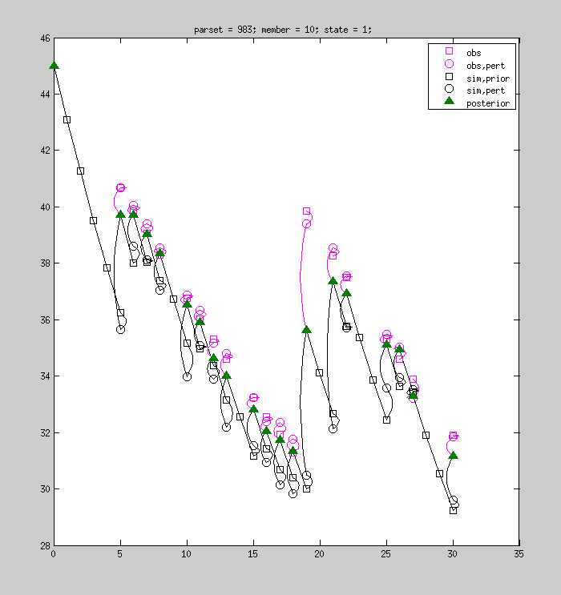

mmsodaPlotEnsemble(conf,evalResults)
mmsodaPlotEnsemble(conf,evalResults,...)
handles = mmsodaPlotEnsemble(conf,evalResults,...)
mmsodaPlotEnsemble(conf,evalResults)
This function can be used to visualize the dynamics of selected combinations fo parameter set, ensemble member, and state. It requires that the Ensemble Kalman Filter results are stored in the `./results' subdirectory. For each combination of parameter set, member, and state, mmsodaPlotEnsemble() shows how each observation was perturbed, how each model prediction was perturbed, and how they were combined into a posterior state. Multiple parameter sets, members, and states may be visualized (see table below). By default, the first member and first state of the last parameter set is visualized.
mmsodaPlotEnsemble(conf,evalResults,...)
The mmsodaPlotEnsemble() function may be called with various options for more detailed control of its behavior. See table below for an overview of the authorized options. As an example, here's how to visualize the first state of the 10-th member of the 983-rd parameter set:
mmsodaPlotEnsemble(conf,evalResults,'iParset',983,'iMember',10)
which, depending on the model at hand, may result in:

handles = mmsodaPlotEnsemble(conf,evalResults,...)
When called like this, mmsodaPlotEnsemble() returns the handles to the figure objects after plotting.
[handles,data] = mmsodaPlotEnsemble(conf,evalResults,...)
When called like this, mmsodaPlotEnsemble() returns the handles to the figure objects after plotting, as well as a cell array containing the concatenated values of the model prediction (stateValuesKFPrior), the perturbed predictions (stateValuesKFPert), the posterior states (stateValuesKFPost), and the perturbed observations (obsPerturbed).
The table below lists the authorized options with which mmsodaPlotEnsemble may be called.
| Option | Description |
| 'colorObs' | 1x3 vector defining with which color the observations should be displayed. Default is [1,0,1]. |
| 'colorPost' | 1x3 vector defining with which color the posterior states should be displayed. Default is [0,0.5,0]. |
| 'colorSim' | 1x3 vector defining with which color the prior states should be displayed. Default is [0,0,0]. |
| 'connStyle' | Cell array containing the connectors' style properties. Default is {'linewidth',1.5}. |
| 'connWidth' | Horizontal extent of the connectors, measured in units of the horizontal axis. |
| 'iMember' | Integer scalar or vector, defining which member(s) should be displayed. |
| 'iParset' | Integer scalar or vector, defining which parameter combination(s) should be displayed. |
| 'iStateKF' | Integer scalar or vector, defining which ensemble Kalman Filter state(s) should be displayed. |
| 'normalizeByObs' | Scalar logical indicating whether the contents of the plot should be normalized by the observations or not. Can be useful when the system is characterized by strong dynamics. |
| 'showiParset' | Logical scalar defining whether or not to show the 'iParset' value in the title. Default is true. |
| 'showiMember' | Logical scalar defining whether or not to show the 'iMember' value in the title. Default is true. |
| 'showiStateKF' | Logical scalar defining whether or not to show the 'showiStateKF' value in the title. Default is true. |
| 'showLegend' | Logical scalar defining whether or not to show a legend. Default is true. |
| 'stateStyle' | Cell array containing the states' style properties. Default is {'markersize',8,'markerfacecolor','none','linestyle','none'}. |